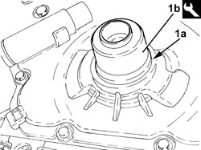
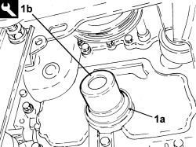

1020D18 FRONT CRANKSHAFT COVER OIL SEAL - R.R.
- Path
- Procedures > 10 ENGINE > 1020 CRANKCASE SUMP AND COVERS > 1020D OIL SEALS ON CRANKSHAFT > 1020D18 FRONT CRANKSHAFT COVER OIL SEAL - R.R.
- Kind
- repair procedure (removal / refitting; the operation number is the code)
- Applies to
- all engines; all production periods
- Interactive page
- https://sloeber94.github.io/elrnDB-aBrrSpdr/en/#/946001839
Applies to: engines: 2.2 JTS; all production periods
 Removing
Removing
 Refitting
Refitting- Position the vehicle on a lift.
Op. 4450B04 RIGHT FRONT WHEEL - R.R
Op. 7055B66 ENGINE COMPARTMENT DUST COVER IN RIGHT FRONT WHEEL ARCH - R.R.
Op. 1092G10 SINGLE ENGINE BELT - R.R
Op. 1092A10 CRANKSHAFT PULLEY - R + R
- Release and remove the oil seal from the front crankshaft cover.
Applies to: engines: 2.2 JTS; all production periods
Refitting
Removing1. Fit a new oil seal (1a) on the crankshaft front cover using the tool (1b).
Tool | Description | Function | Validity |
|---|---|---|---|
1860099000 | Fitting tool | Fitting timing chain cover oil seal | 1.9 JTS 2.2 JTS |

Applies to: engines: 2.2 JTS; all production periods
Op. 1092A10 CRANKSHAFT PULLEY - R + R
Op. 1092G10 SINGLE ENGINE BELT - R.R
Op. 7055B66 ENGINE COMPARTMENT DUST COVER IN RIGHT FRONT WHEEL ARCH - R.R.
Op. 4450B04 RIGHT FRONT WHEEL - R.R
- Remove the vehicle from the lift.
Applies to: engines: 3.2 JTS; all production periods
Removing
Refitting- Position the vehicle on a lift.
Op. 4450B04 RIGHT FRONT WHEEL - R.R
Op. 7055B66 ENGINE COMPARTMENT DUST COVER IN RIGHT FRONT WHEEL ARCH - R.R.
Op. 7055B91 RIGHT FRONT WHEEL ARCH LINER - R.R.
Op. 1008B10 POWER UNIT FRONT SUPPORT FLEXIBLE MOUNTING (TIMING SIDE) - REPLACE
Op. 1008A46 POWER UNIT RIGID SUPPORT - TIMING SIDE - R.R.
Op. 1092G10 SINGLE ENGINE BELT - R.R
Op. 1092A10 CRANKSHAFT PULLEY - R + R
- Release and remove the oil seal from the front crankshaft cover.
Applies to: engines: 3.2 JTS; all production periods
Refitting
Removing1. Fit a new oil seal (1a) on the crankshaft front cover using the tool (1b).
Tool | Description | Function | Validity |
|---|---|---|---|
1860949000 | Fitting tool | Fitting crankshaft front oil seal | 3.2 JTS |

Applies to: engines: 3.2 JTS; all production periods
Op. 1092A10 CRANKSHAFT PULLEY - R + R
Op. 1092G10 SINGLE ENGINE BELT - R.R
Op. 1008A46 POWER UNIT RIGID SUPPORT - TIMING SIDE - R.R.
Op. 1008B10 POWER UNIT FRONT SUPPORT FLEXIBLE MOUNTING (TIMING SIDE) - REPLACE
Op. 7055B91 RIGHT FRONT WHEEL ARCH LINER - R.R.
Op. 7055B66 ENGINE COMPARTMENT DUST COVER IN RIGHT FRONT WHEEL ARCH - R.R.
Op. 4450B04 RIGHT FRONT WHEEL - R.R
- Remove the vehicle from the lift.
Applies to: engines: 2.4 JTD 20v; all production periods
- On this car, it is not possible to remove/refit the crankshaft front oil seal cover on the car.
To perform this operation, remove/refit the power unit
Op. 1004B10 POWER UNIT WITH MANUAL GEARBOX - R.R
and then work at the bench, customising the engine service procedures for this operation.
Topics linked from this page (8)
- 1004B10 POWER UNIT WITH MANUAL GEARBOX - R.R
- 1008A46 POWER UNIT RIGID SUPPORT - TIMING SIDE - R.R.
- 1008B10 POWER UNIT FRONT SUPPORT FLEXIBLE MOUNTING (TIMING SIDE) - REPLACE
- 1092A10 CRANKSHAFT PULLEY - R + R
- 1092G10 SINGLE ENGINE BELT - R.R
- 4450B04 RIGHT FRONT WHEEL - R.R
- 7055B66 ENGINE COMPARTMENT DUST COVER IN RIGHT FRONT WHEEL ARCH - R.R.
- 7055B91 RIGHT FRONT WHEEL ARCH LINER - R.R.